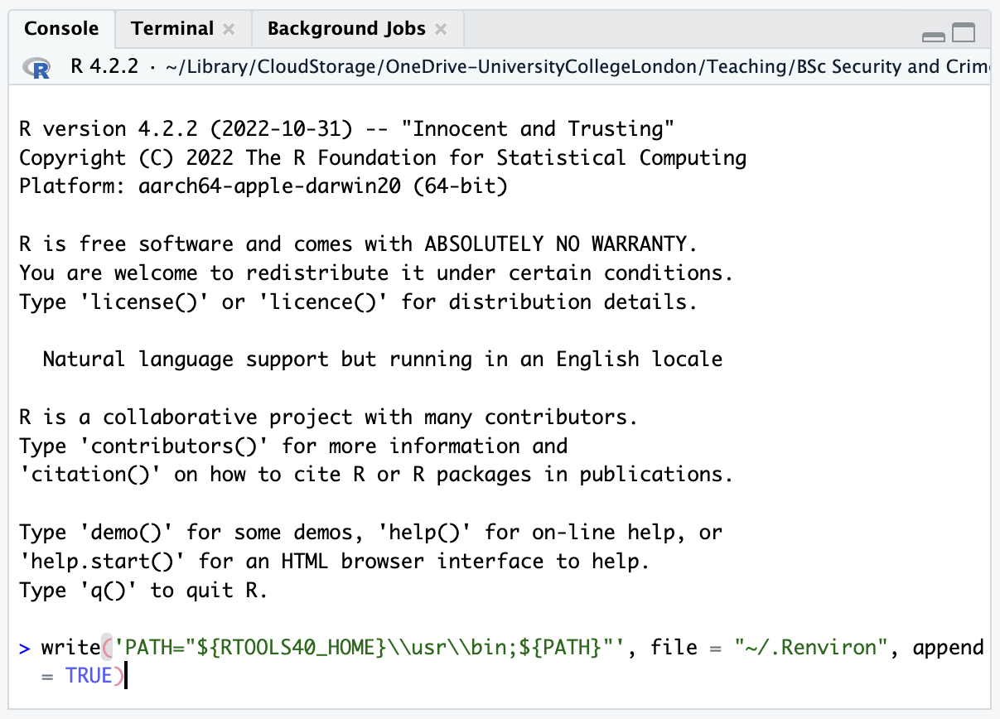
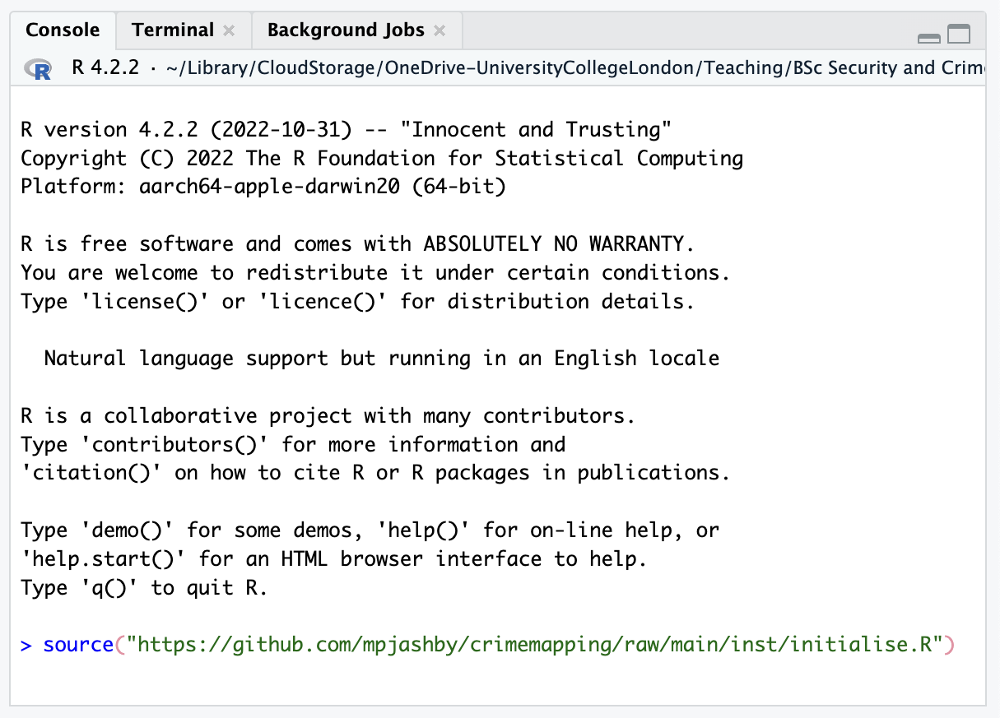

Install the software needed for this book
However you are going to use this book, you will first want to install the software that we will use to create crime maps.
Step 1: install R
The first step is to download and install R, a programming language designed for analysing and visualising data, including making maps. To install R, visit the R website and download R for either Windows or Mac, depending on what type of computer you are using. If you already have R installed on your computer, please update it to the latest release.
This video talks you through the process of installing R:
Step 2: install RStudio
The next step is to download RStudio, an app that you can use to work with the R programming language more efficiently. Download RStudio Desktop for your computer from the Posit website (that’s the company that makes RStudio) and install. If you already have RStudio Desktop installed on your machine, please update it to the latest release.
This video talks you through the process of installing RStudio:
Step 3: install RTools (Windows only)
If you are using a Windows computer you should install Rtools, which will be needed by RStudio for some tutorials. If you are using a Mac or Linux computer, you do not need to install Rtools.
To install RTools:
- Download the latest version from the R website and open the downloaded file.
- Follow the installation instructions (accept all the default options).
- Open RStudio.
- Find the panel (in the bottom-left) marked Console.
- Find the
>symbol at the bottom of that panel. - Copy and paste the following code to the right of the
>symbol:
write('PATH="${RTOOLS40_HOME}\\usr\\bin;${PATH}"', file = "~/.Renviron", append = TRUE)- Press
Enter.

If you cannot install software on your computer
You may not be able to install software on the computer you want to use for crime mapping, or you may prefer not to for various reasons. In that case, you can run RStudio online using Posit Cloud. Posit Cloud is free for a certain number of hours each month, after which you can pay to continue using it.
Using Posit Cloud allows you to avoid the installation steps for R, RStudio and RTools above, but remember that since Posit Cloud operates online, you should not use it work on confidential or personal data unless you have the necessary permission to do so.
Running the interactive tutorials
If you are going to use this book as you would any other technical how-to book, you can move ahead to the next chapter now. If you are going to use the interactive tutorials that accompany this book, there is one final step to set them up:
- Open RStudio.
- Find the panel (in the bottom-left) marked Console.
- Find the
>symbol at the bottom of that panel. - Copy and paste the following code to the right of the
>symbol:
source("https://github.com/mpjashby/crimemapping/raw/main/inst/initialise.R")- Press
Enter.

It will take a few minutes for the tutorials to be set up. Once the process is complete you will see a message telling you this.